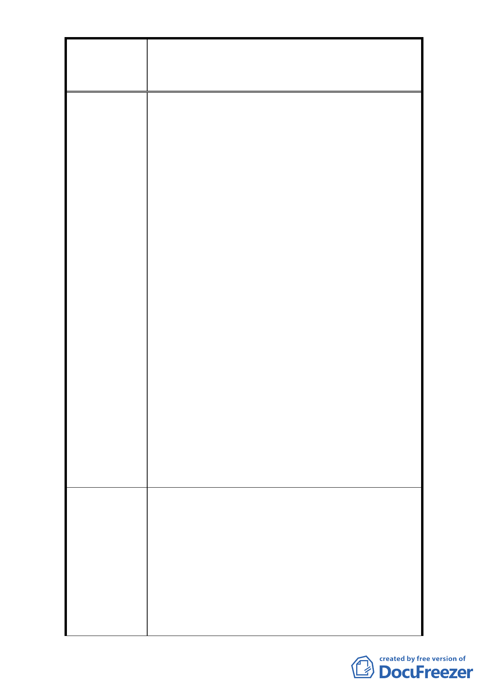

修訂臺北市大安區青田街保存區聚落風貌保存專用區細部計
案
名
畫、變更部分第三種住宅區、第三種商業區(特)為第三種住宅區
(特)(日式宿舍)及第三種商業區(特)(日式宿舍)暨劃定週邊地
區都市設計管制細部計畫案
成「原則」呢？難道是店面的需求？這裡是靜巷學
區，絕不宜更多店家進駐。青田街是本市樹木保護
的楷模社區，一定要讓綠樹世世代代生存下去。(2)
新計畫中第肆項改為”經「臺北市都市設計…委員
會審議…不受此限”」，感覺在留後路。(3)限開挖
率，以免於森林的限無止的消失。生命的土地失落。
(4)古蹟及聚落風貌經改變或破壞就難以再回復。
4、(1)刪除 60%開挖率限制與留院深的限制會使青田
街的綠樹遭殃，況且都市要留下透水層，下大雨才
不會淹水，大樹的根才能呼吸。(2)其實我們這裏有
師大、金華國中、永康 67 等停車空間，沒有要移入
停車獎勵的必要，而且新房子的公用停車場外車（非
該大樓住戶）都看得到停不到吧！
5、既然文化局、觀光傳播局在陸客自由行程那麼主張
「康青龍」，就應該維持原聚落保存計畫。因為永康
街、龍泉街太商業，青田街有生態又有名人舊居，
是我們留給子孫重要的財產！個人覺得有留院子、
限制 60%開挖率、用色的「原計畫」才是保有青田
聚落的防線。公部門千萬不要失守了。
6、(1)如果都更就是要改成高樓大廈黃金店面，青田街
將失去最寶貴的文化資產特色、歷史記憶與大樹下
的共同記憶。如果都更讓青田街失去原有風味，就
太可惜了。(2)幾十年的大樹、珍貴的日照與巷弄閒
情是需要維護保存的。
1、 (1)政府應有作為讓當地居民不主張都更，例如提
供相關補償給無法改建的居民(減稅…等)。(2)荒
廢的房舍還是有許多開放空間的運用可能，未必
要文化局花大錢。
建 議 辦 法 2、 (1)若要維護市民都更權益，考量青田街街廓為全
市木造房舍密度最高的珍貴地段，應進行公辦都
更，遏阻開發商藉以炒高房價，落實小市民的居
住正義。(2)人在公門好修行，公部門應秉持良知
良能捍衛城市生態。
- 25 -